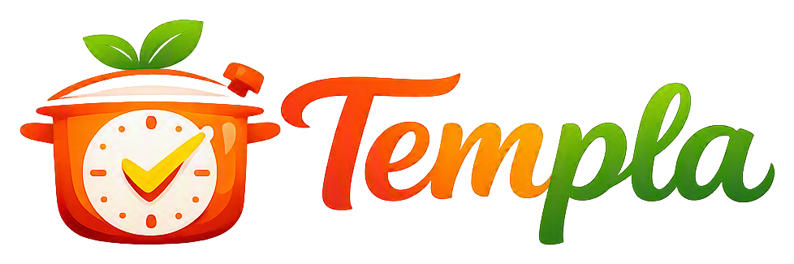

Cero desperdicio · sin sal · 1 porción
Cocinadas
La receta como línea de tiempo viva. Documentación del sistema: arquitectura, decisiones, pruebas, despliegue y seguridad.
Leer primero
- ArquitecturaComponentes, cómo se comunican, qué ADR respalda cada decisiónVista general
- Decisiones de arquitecturaTrece ADR: compose único, tres servicios, NATS, PostgreSQL, Caddy, JWT…ADR
Operar
- PruebasUnitarias con compuerta del 100 %, integración, mutation testing y sus resultadosCalidad
- DespliegueVM de Oracle, imágenes por SHA, reversión, respaldo, operación diariaOracle Cloud
- SeguridadAmenazas, mitigaciones y lo que queda abiertoAbiertos listados